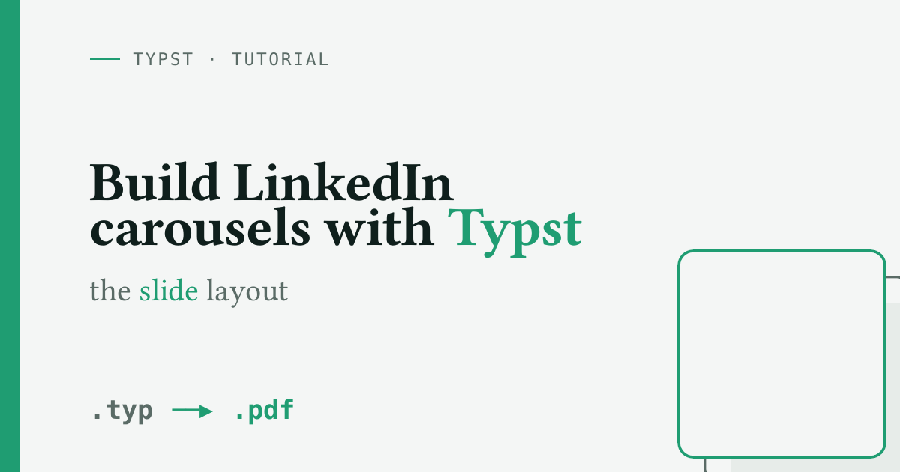

Latest
Build LinkedIn Carousels with Typst: the slide Layout
A LinkedIn carousel is just a multi-page document. This short tutorial shows how a tiny Typst slide helper gives every page a full-bleed background with consistent padding, then how to compile the deck to PDF and preview frames. It ends with a ready-to-paste LLM prompt that drafts a similar carousel from scratch.
typstdesignlinkedincarouselproductivity